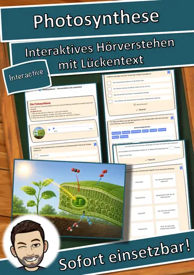

Frühblüher Materialpaket - Frühblüher
KostenlosMaterial auf eduki ansehen
Sie finden hier das Frühblüher Materialpaket zum Thema Frühblüher. Es beinhaltet ein Arbeitsblatt inkl. Lösunungsblatt sowie Frühblüher Tafelmaterial, Laminate, Bilder, Tafellaminate, für Schaukästen, etc. Es handelt sich um 33 Frühblüher Laminate. (22 Bildkarten und die passenden Begriffe in schönem Design).
Im Materialpaket dargestellt und beschriebend sind folgende Begriffe:
Gänseblümchen, Maiglöckchen, Krokus, Märzenbecher, Narzisse, Schneeglöckchen, Primel, Stiefmütterchen, Ranunkel, Traubenhyazenthe, Tulpe
FachSachunterricht
KlasseKl. 3–4
SchulformGrundschule
MaterialartStundenentwürfe, Unterrichtsreihen, Arbeitsblätter, Mal- und Bastelvorlagen
Ähnliche Materialien

Lesespaziergang: Frühblüher im Garten und im Wald – 3-fach differenziert (★/★★/★★★), Klasse 2–4

Naturwerkstatt Grundschule Naturwerkstatt Grundschule – Einheit 3: Pflanzen und Bäume in der Winterzeit – Differenzierte

Kompass - Himmelsrichtungen - Begriffskarten

Gänseblümchen Lückentext mit Wortspeicher Hörverstehen und Suchsel

Lesespur: Die Tulpe – Lesespurgeschichte mit Rätseln (Klasse 8)

Tafelmaterial Steinzeit

Schneeglöckchen – Hörverstehen mit Lückentext (interaktiv)
